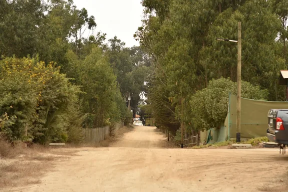
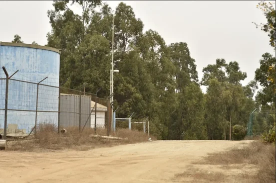

Ampliación Servicio Sanitario Rural Horcón
Medio Humano · Línea de Base · Entrevistas y análisis cualitativo
Participé en el desarrollo del componente de Medio Humano para la Declaración de Impacto Ambiental del proyecto Ampliación Servicio Sanitario Rural Horcón y elaboré el Informe de Entrevistas de Línea de Base. El trabajo integró revisión de antecedentes, caracterización territorial, entrevistas semiestructuradas y análisis cualitativo organizado según las cinco dimensiones utilizadas para caracterizar los sistemas de vida y costumbres de grupos humanos.

El proyecto y mi contribución
El proyecto contempló la ampliación del sistema de agua potable rural de Horcón mediante la habilitación de pozos, una caseta de tratamiento, nuevos estanques, una planta elevadora y una red de distribución. Las obras se distribuían en distintos sectores de la comuna de Puchuncaví, incluyendo Caleta Horcón y Chocota, lo que hizo necesario identificar y caracterizar los grupos humanos potencialmente relacionados con cada componente.
Por tratarse de una Declaración de Impacto Ambiental, la evaluación requería desarrollar el componente de Medio Humano, que incluyó la delimitación del Área de Influencia, la caracterización territorial y documental y la producción de información primaria mediante entrevistas.
Mi contribución: Participé en el desarrollo del componente de Medio Humano y elaboré el Informe de Entrevistas de Línea de Base. El informe organizó la información cualitativa obtenida de actores comunitarios según las cinco dimensiones utilizadas para caracterizar los sistemas de vida y costumbres de grupos humanos, aportando antecedentes incorporados a la caracterización territorial de la DIA.
Las seis entrevistas incluyeron siete personas participantes vinculadas a organizaciones territoriales, actividad comercial, vivienda, pesca y administración del APR.
Ver estructura territorial del estudio Puchuncaví · Camino a Horcón · Caleta Horcón · Chocota
La Línea de Base de Medio Humano no trabajó el área de influencia como un único polígono homogéneo. El Informe de Medio Humano distingue sectores asociados a los distintos componentes de la obra:

El esquema es conceptual y resume la distribución territorial de obras y áreas de estudio; no representa límites cartográficos del Área de Influencia.
Cómo se construyó el análisis de entrevistas Entrevistas semiestructuradas · selección de enunciados · codificación · categorización · matrices de análisis
De los actores al análisis
Las seis entrevistas fueron realizadas con siete personas vinculadas a organizaciones territoriales, actividad comercial, vivienda, pesca y administración del APR. La selección buscó recoger perspectivas desde ámbitos relevantes para la caracterización del Medio Humano del área.
Se utilizó una pauta semiestructurada diseñada en función de las dimensiones del estudio, lo que permitió profundizar determinados contenidos durante las conversaciones sin perder la relación con los aspectos requeridos para la caracterización territorial.
El proceso analítico
Las entrevistas no fueron incorporadas directamente a la Línea de Base como citas aisladas. Su procesamiento incluyó fases sucesivas orientadas a organizar el contenido cualitativo de forma sistemática:
Del relato a categorías de análisis
El esquema sintetiza el procedimiento documentado en el Informe de Entrevistas y no representa herramientas metodológicas desarrolladas posteriormente en otros proyectos.
Matrices de análisis
El proceso utilizó matrices de análisis para organizar códigos, categorías y relaciones identificadas en las distintas fases. Los códigos y categorías fueron luego agrupados y reorganizados para articularse con las dimensiones de Medio Humano requeridas por la caracterización.
Este procedimiento permitió que los contenidos de las entrevistas pudieran ser relacionados con otros antecedentes territoriales y documentales, en lugar de quedar como registros cualitativos independientes.
Cinco dimensiones para leer el territorio
El análisis de entrevistas y la caracterización territorial fueron organizados considerando cinco dimensiones de Medio Humano.
Geográfica
Movilidad, localización, conectividad y relaciones espaciales.
Demográfica
Composición y dinámicas de población.
Antropológica
Prácticas, celebraciones, pertenencia e identidad territorial.
Socioeconómica
Pesca, turismo, comercio y otras actividades económicas.
Bienestar Social Básico
Acceso a agua, educación, salud, equipamiento y otros servicios.
Qué aportaron las entrevistas a la caracterización Vida cotidiana · cultura local · economía · servicios · relaciones territoriales
Los antecedentes descritos a continuación provienen del análisis de entrevistas cualitativas. No deben interpretarse como representación estadística de la población ni como conclusiones sobre impactos del proyecto.
A. Territorio y movilidad
Las entrevistas permiten reconocer relaciones cotidianas entre las localidades del área de estudio: desplazamientos, accesos y vínculos que estructuran la movilidad territorial de los grupos humanos vinculados al proyecto.
B. Economía local y estacionalidad
Entre los temas identificados, las personas entrevistadas refieren el turismo, la pesca y el comercio gastronómico como actividades relevantes en Horcón. Los antecedentes describen una economía local con marcada estacionalidad.
C. Prácticas culturales e identidad
Las entrevistas permiten reconocer la importancia de celebraciones vinculadas a San Pedro y su rol sociocultural dentro de la comunidad. La caracterización antropológica incorpora estos elementos como parte de la descripción de prácticas comunitarias.
D. Servicios básicos y agua
La caracterización incorpora antecedentes sobre diferencias territoriales en el acceso a servicios básicos y situaciones asociadas al abastecimiento de agua. El acceso a agua potable rural fue un tema presente tanto en las entrevistas como en la actividad de Participación Ciudadana.
E. Relación Horcón–Chocota
Los antecedentes permiten reconocer que ambas localidades mantienen relaciones territoriales, culturales y funcionales. La caracterización describe estos vínculos sin homogeneizar las particularidades de cada sector.
Actividad de Participación Ciudadana
En mayo de 2024 se realizó una actividad participativa con actores comunitarios vinculados al proyecto. Sus resultados fueron incorporados como antecedentes complementarios.
16 mujeres · 10 hombres
de la claridad de la información
de la resolución de dudas
La convocatoria apareció como un aspecto susceptible de mejora dentro de las evaluaciones.
De las entrevistas a la Línea de Base
Las entrevistas no constituyeron un producto separado de la caracterización territorial. Su análisis fue utilizado para complementar la información secundaria y aportar antecedentes cualitativos a las cinco dimensiones de Medio Humano.
Este proceso permitió relacionar relatos sobre vida cotidiana, actividades económicas, prácticas culturales, movilidad y acceso a servicios con la caracterización territorial desarrollada en la Línea de Base.
Ver cadena completa de análisis cualitativo De los actores entrevistados a la caracterización de Medio Humano
De los actores a la caracterización de Medio Humano
Organizaciones territoriales · comercio local · vivienda · pesca · APR
6 entrevistas · 7 personas · pauta semiestructurada por dimensiones
Identificación de fragmentos relevantes para las dimensiones del estudio
Asignación de códigos · agrupación en categorías · codificación axial
Organización de códigos, categorías, ejemplos y relaciones identificadas
Geográfica · Demográfica · Antropológica · Socioeconómica · Bienestar Social Básico
Antecedentes cualitativos incorporados a la Línea de Base de la DIA
Esta cadena corresponde a una reconstrucción metodológica basada en el Informe de Entrevistas; no implica que existiera en ese momento una arquitectura formal de trazabilidad equivalente a proyectos posteriores.
Participación en Medio Humano · 2024
Participé en el desarrollo del componente de Medio Humano para la Declaración de Impacto Ambiental y elaboré el Informe de Entrevistas de Línea de Base, cuyos resultados fueron incorporados como antecedentes cualitativos de la caracterización territorial.
Capacidades y productos desarrollados
Responsabilidades y entregables en el componente de Medio Humano
De entrevistar actores a construir una lectura territorial
Horcón fue uno de los proyectos en que comencé a estructurar de manera más explícita el paso desde las entrevistas hacia categorías analíticas organizadas según las dimensiones de Medio Humano.
La experiencia mostró que una entrevista adquiere mayor valor dentro de una Línea de Base cuando sus contenidos pueden relacionarse sistemáticamente con otros antecedentes del territorio y con las preguntas que debe responder la caracterización. El proceso de selección de enunciados, codificación y categorización fue central para lograr esa articulación.
¿Tu proyecto requiere construir o profundizar una Línea de Base de Medio Humano?